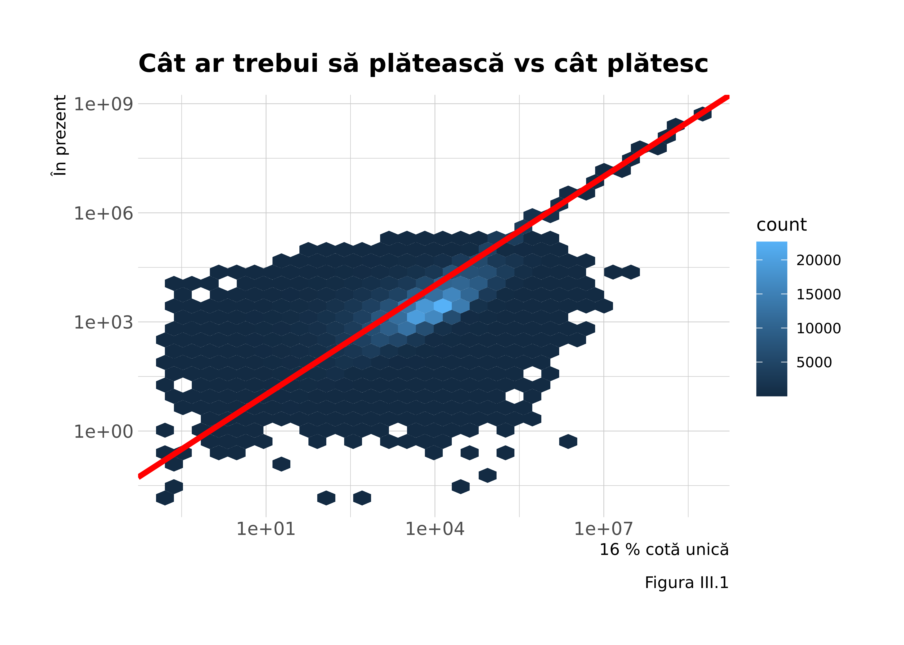

Capitol 3 Diferite metode de impozitare
În această secțiune vom analiza care dintre cele două metode de impozitare - pe cifra de afaceri sau pe profit - este soluția care maximizează veniturile statului. În momentul actual, microîntreprinderile (cifra de afaceri sub 1 milion de euro) sunt impozitate cu 3 % pe cifra de afaceri dacă nu au angajați și 1 % dacă au. Doar pentru firmele ce trec de acest prag impozitul este de 16 % pe profit. Pragul de 1 milion de euro a fost ridicat încă din 2015 în mod treptat astfel că și-a pierdut scopul de a fi un prag care, chipurile, ar ajuta firmele “mici” să plătească mai puțin din moment ce doar 4 % din firme depășesc acest prag. Departe de a fi o măsură care susține “micii antreprenori,” a devenit sub auspiciile teoreticienilor social-democrați valahi care trec drept oameni de stânga, și nu a “neoliberalilor,” o măsură de relaxare fiscală generalizată. Să începem prin a calcula care este impactul teoretic al acestor măsuri, în anumite limite, întrucât firmele mici pot opta și pentru impozitul pe profit dacă îndeplinesc anumite condiții (angajați și 45.000 euro capital social) dacă ele consideră că este mai avantajos așa. Vom asuma că fiecare fiecare firmă plătește așa cum este mai avantajos pentru ea (impozitul cel mai mic pe care-l poate plăti). Apoi vom calcula cât ar putea câștiga statul în plus revenind la cota unică de 16 % pe profit și care sunt firmele avantajate sau dezavantajate de fiecare schemă.

Observăm în graficul din figura III.1 că nu există o variantă universal favorabilă sau nefavorabilă - nu toate firmele mici au posibilitatea să opteze pentru impozitul pe profit și asta se vede. Altminteri nicio firmă nu s-ar putea situa deasupra liniei roșii și toate firmele ar plăti în mod umanim mai mult sub regimul cotei unice. Cu toate astea există totuși diferență în agregat - cea care contează pentru bugetul statului. Astfel avem 21.4430576 miliarde lei impozit adunat în regimul cotei unice de 16 % și 15.9547201 miliarde adunate în prezent (în anul 2019). Diferența este semnificativă, statul ar putea obține cu 34 % mai mult impozit pe profit decât în prezent, echivalentul diferenței fiind de aproximativ 0.5 % din PIB. Cum ar afecta această schimbare sectoarele de activitate ?
Aparent, cel mai mare impact ar fi asupra PFA-urilor, construcțiilor, comerțului și tranzacțiilor imobiliare. Dar acest lucru doar datorită numărului lor mare. Altminteri, firmele care vor plăti în medie - nu în sumă, cel mai mult sunt cele de intermedieri financiare și asigurări, tranzacții imobiliare și producția și furnizarea de energie electrică. Ele vor plăti în plus cele mai mari sume la nivel de firmă, nu de sector.